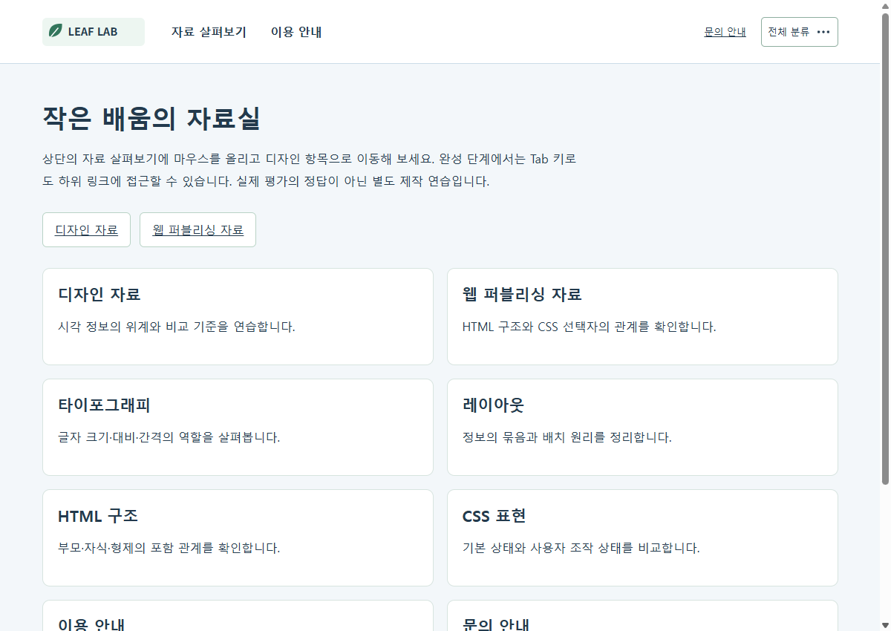
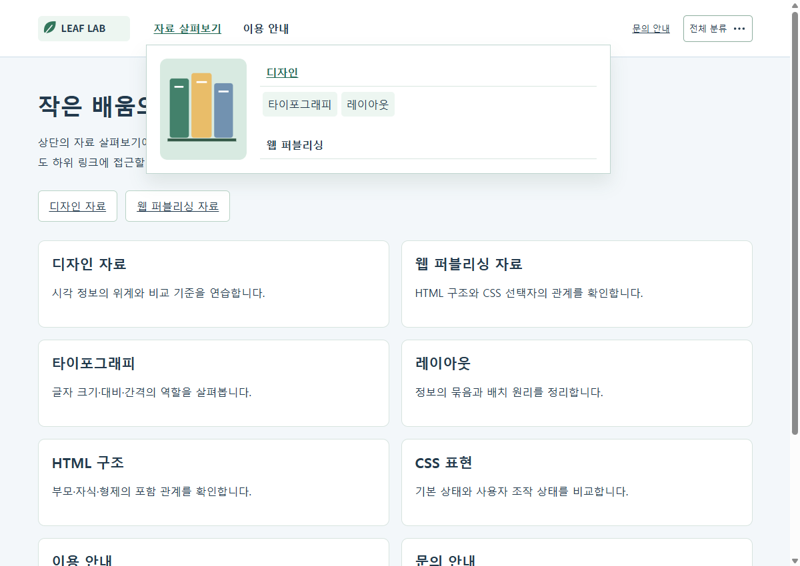

구현 응용 | A그룹
1. 동작하는 메뉴를 안정적인 구조로 다듬기
상단바와 하위 메뉴를 구현했다면 기본 상태, 중첩 구조, 지정 명세와의 대응을 다시 점검하세요. 화면에서 우연히 맞는 배치와 구조적으로 연결된 동작을 구분하는 것이 이번 목표입니다.
| 보완 대상 | 이번 활동 |
|---|
| 기본 상태·누락 | 닫힘 상태와 2·3차의 실제 구조 확인 |
| 세부 정확도 | 링크·파일명·클래스·SVG·잘못된 값 대조 |
| 코드 정리 | 공통 규칙과 상태 규칙 분리, 중복 제거 |
| 재확인 | 같은 조건의 수정 전후와 잔여 과제 기록 |
권장 150분: 명세·구조 30분 → 상태·위치 45분 → 링크·SVG·정리 40분 → 재확인·기록 35분. 강의는 필요한 부분을 선택하여 별도로 시청합니다.
현재 평가 피드백의 상단바·하위 메뉴·HTML/CSS 보완을 다룹니다. 예제는 별도 제작한 가상 자료실이며 평가 정답이나 학생 제출물이 아닙니다. 원래 문제에 지정된 이름·이미지·수치·구조는 실제 명세를 대조하세요. 키보드·좁은 화면 확인은 추가 학습이며 기존 평가 배점을 바꾸지 않습니다.
구현 응용 | A그룹
2. 구조와 직접 자식 선택자 대조하기

하위 메뉴가 열리는 조건은 실제 포함 관계와 연결되어야 합니다. 직접 자식 선택자 >는 한 단계 아래만 선택하므로, 중간 목록이나 래퍼를 건너뛰어 적용할 수 없습니다.
<li class="primary-item">
<a href="#library">자료 살펴보기</a>
<div class="sub-panel">
<ul class="secondary-list">
<li class="secondary-item">
<a href="#design">디자인</a>
<ul class="third-list">
<li><a href="#type">타이포그래피</a></li>
</ul>
</li>
</ul>
</div>
</li>실습: 자신의 선택자 두 개를 고르고 일치하는 실제 요소 수를 개발자 도구에서 확인하세요. 예제의 클래스명은 역할 설명용이며 원래 평가의 지정 클래스명을 대체하지 않습니다.
구현 응용 | A그룹
3. 닫힘·2차·3차 상태를 따로 명세하기
상태를 “메뉴가 된다” 한 줄로 쓰지 말고 입력 조건과 바뀌는 요소를 나누세요. 2차가 열리는 조건과 3차가 열리는 조건은 서로 다른 부모에 연결됩니다.
| 상태 | 조건 | 확인 |
|---|
| 기본 | 마우스·초점이 메뉴 밖 | 하위 메뉴가 보이지 않고 숨은 링크에 초점이 가지 않음 |
| 2차 | 1차 항목 hover 또는 내부 초점 | 해당 패널의 이미지·목록 표시 |
| 3차 | 2차 항목 hover 또는 내부 초점 | 해당 항목의 3차 링크 표시 |
| 해제 | 마우스·초점 모두 메뉴 밖 | 기본 상태로 돌아감 |
.sub-panel { display: none; }
.primary-item:hover > .sub-panel { display: block; }
.third-list { display: none; }
.secondary-item:hover > .third-list { display: flex; }예제는 display로 닫힘을 처리합니다. 원래 수업의 height:0 방식은 overflow와 내부 링크 초점도 함께 점검하세요. 높이만 0이면 내용이 새어 보일 수 있습니다.
실습: 현재 구현에서 상태별 캡처를 남기고 바뀌면 안 되는 로고 크기·상단바 높이가 변하지 않는지 확인하세요.
구현 응용 | A그룹
4. 펼침 위치와 이동 경로 안정화하기
absolute 요소는 위치 기준을 갖는 조상을 확인해야 합니다. top:100%만 적고 부모 기준을 빠뜨리면 패널이 다른 곳에 배치될 수 있습니다. 펼침 영역으로 이동하는 경로에 빈 간격이 있으면 hover가 끊길 수 있습니다.
.study-nav { position: relative; }
.sub-panel { position: absolute; top: 100%; left: 0; right: 0; }| 관찰 | 보완 방법 |
|---|
| 다른 곳에 펼쳐짐 | 가장 가까운 위치 기준 조상과 top·left 확인 |
| 이동 중 닫힘 | 부모 영역·패널 사이 간격과 실제 포인터 경로 확인 |
| 가로 잘림 | 고정 너비·padding·자식 최소 크기 확인 |
| 화면 흔들림 | hover에 상단바 padding·높이가 바뀌는 규칙이 있는지 확인 |
실습: 1차 링크에서 2차·3차로 마우스를 실제로 이동하세요. 같은 화면 폭에서 수정 전후의 패널 위치와 상단바 높이를 기록합니다.
구현 응용 | A그룹
5. 링크의 목적과 SVG 구현 구분하기
홈으로 이동하는 로고는 링크와 이미지가 함께 필요합니다. 다른 위치로 이동하는 요소는 실제 목적지를 갖는 a를 사용하고, 실행 동작은 그 역할에 맞는 요소로 구분하세요. 전화 링크를 작성했다는 것과 실제 통화 확인은 다른 검증입니다.
<a class="brand" href="#main">
<img src="../assets/logo.svg" alt="LEAF LAB 자료실 홈" />
</a>
<a class="icon-link" href="#classification">
전체 분류
<svg viewBox="0 0 24 24" aria-hidden="true" focusable="false">
<circle cx="5" cy="12" r="1.8"></circle>
<circle cx="12" cy="12" r="1.8"></circle>
<circle cx="19" cy="12" r="1.8"></circle>
</svg>
</a>외부 .svg 파일을 img로 부르는 방식과 HTML 안에 svg·circle을 직접 작성하는 방식은 다릅니다. 예제의 아이콘은 텍스트를 보조하므로 aria-hidden으로 장식임을 표시하고, 링크 이름은 “전체 분류” 텍스트가 제공합니다.
실습: 기존 평가의 링크·아이콘 조건을 체크하고 파일 경로, alt, 링크 이름과 실제 이동 대상을 대조하세요. 예제에는 실제 전화번호·문의 서비스가 없습니다.
구현 응용 | A그룹
6. CSS 초기화·중복·상태 규칙 정리하기
선택자가 맞아도 잘못된 값은 적용되지 않습니다. padding:auto처럼 허용되지 않는 값, 색상 표기의 오타, 뒤 규칙에 가려진 값을 개발자 도구에서 확인하세요.
/* 유효한 값으로 초기화하고 초점 표시를 유지합니다. */
* { box-sizing: border-box; }
ul { margin: 0; padding: 0; list-style: none; }
/* 동일 요소의 상태 규칙은 기본 규칙과 구분해 둡니다. */| 정리 항목 | 확인할 내용 |
|---|
| 잘못된 값 | 문법·단위·색상 형식과 실제 적용값 |
| 중복 선택자 | 같은 값을 여러 번 수정해야 하는지 |
| 상태 규칙 | 상태가 바뀔 때 필요한 요소만 변하는지 |
| 미사용·시험 코드 | 의도 없는 border·빈 영역·연결되지 않는 선택자 |
실습: 중복 한 묶음과 잘못된 값 한 개를 정리하고 모든 메뉴 상태가 유지되는지 확인하세요. 이해하지 못한 코드를 한꺼번에 삭제하지 말고 변경 이유를 기록합니다.
구현 응용 | A그룹
7. 키보드와 좁은 화면으로 추가 점검하기
hover 동작을 확인한 다음에는 Tab으로 같은 정보에 도달할 수 있는지도 살펴보세요. CSS :focus-within은 자기 자신이나 자손에 초점이 있는 동안 부모에 적용됩니다.
.primary-item:focus-within > .sub-panel { display: block; }
.secondary-item:focus-within > .third-list { display: flex; }
a:focus-visible { outline: 3px solid #b34c12; outline-offset: 3px; }이 연습은 일반 링크 내비게이션입니다. 화살표·Escape로 동작하는 별도 ARIA 메뉴 위젯을 구현한 예제는 아닙니다. 터치에서 hover를 요구하지 않도록 본문에도 직접 링크를 제공합니다.
| 추가 확인 | 관찰 |
|---|
| Tab·Shift+Tab | 초점이 보이고 열린 하위 링크를 지나갈 수 있는가 |
| 메뉴 밖으로 이동 | 초점과 마우스가 모두 벗어나면 닫히는가 |
| 1200·768·390px | 텍스트와 패널이 가로로 잘리지 않는가 |
실습: 원래 평가 배점과 별개의 보완학습으로 기록하세요. 한 브라우저의 점검 결과를 모든 기기·보조기술의 통과로 확대하지 않습니다.
구현 응용 | A그룹
8. 상태 화면과 수정 전후 검토하기


첨부 01_before는 의도한 오류가 있는 독립 연습이고 02_after는 그 예제를 수정한 비교본입니다. 평가 정답·학생 코드와 분리된 자료입니다.
| 기록 | 남길 내용 |
|---|
| 전후 | 문제가 보이는 상태·환경과 변경 후 결과 |
| 변경 | 어느 파일·선택자·태그를 왜 바꿨는지 |
| 재확인 | 기본·2차·3차·키보드·폭별 실제 확인 |
| 잔여 | 아직 확인하지 않은 환경·남은 질문 |
실습: 본인 결과물에서 가장 중요한 수정 두 가지를 같은 조건으로 비교하고 다음 검토자가 재현할 수 있도록 적으세요.
구현 응용 | A그룹
9. 국내 무료 강의로 원리 확인하기
국내 한국어 무료 공개 강의와 문서입니다. 생활코딩 페이지에는 강의 영상과 예제가 함께 있습니다. 어려운 부분은 멈추어 코드를 직접 바꾸세요.
생활코딩 egoing | 부모 자식 선택자
부모 자식 선택자 원문 열기
열람 후 실습: 직접 자식과 후손의 차이를 내 코드의 선택자 두 개로 설명하세요.
생활코딩 egoing | 가상 클래스 선택자
가상 클래스 선택자 원문 열기
열람 후 실습: hover의 적용 대상과 변하는 요소를 상태표로 정리하세요.
생활코딩 egoing | 포지션
포지션 원문 열기
열람 후 실습: absolute의 기준 부모를 찾아 좁은 화면에서 다시 확인하세요.
TCP School | SVG — 원 그리기
SVG — 원 그리기 원문 열기
열람 후 실습: circle의 좌표·반지름을 바꾸어 아이콘의 표현 규칙을 점검하세요.
옛 강의의 브라우저 지원표를 현재 지원 범위로 단정하지 마세요. 여기서는 선택자·상태·위치·도형의 원리를 배우고 실제 사용하는 브라우저에서 확인합니다. 외부 원문은 링크로 연결하고, 본문의 도식과 자료실 연습 코드는 별도로 제작했습니다.
구현 응용 | A그룹
10. 완료 기준과 다음 학습 방향
| 점검 | 완료 기준 |
|---|
| 파일·구조 | CSS·이미지 연결, 태그 닫힘과 직접 자식 관계를 확인함 |
| 상태 | 닫힘·2차·3차의 조건과 변경 대상을 설명함 |
| 위치·크기 | 기준 부모와 펼침 위치, 글자·여백·가로 잘림을 확인함 |
| 링크·아이콘 | 실제 목적지와 대체텍스트, 인라인 SVG를 대조함 |
| 검토 기록 | 증상·원인·수정·환경·재확인과 남은 질문을 적음 |
- □ 명세의 지정값과 연습 예제의 값을 구분했습니다.
- □ 클래스명·이미지명·CSS 연결을 실제 파일과 대조했습니다.
- □ 기본 상태와 2·3차 상태를 직접 확인했습니다.
- □ 코드 정리 전후의 차이와 이유를 설명할 수 있습니다.
- □ 확인하지 않은 동작은 통과로 적지 않았습니다.
다음 학습: 같은 메뉴 구조를 다른 콘텐츠에 적용하고, 상태·자산·위치 기준을 간단한 전달 문서로 정리하세요. 실제 협업 의견을 받았다면 원문과 반영 내용을 연결하며 가상의 응답은 만들지 않습니다.